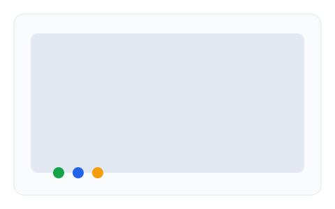

核心功能
多渠道接入
统一接入 Web/微信/Telegram 等渠道，消息路由与工单联动。
AI 智能问答
基于知识库的回答引擎，支持企业知识库（WeKnora）与降级策略。
WebRTC 远程协助
屏幕共享与实时控制，技术支持场景响应更高效。
可观测性
Prometheus 指标与 OTel 追踪，支持自建观测栈。
更聪明的 AI 能力
- 企业知识库（WeKnora）集成，混合检索
- 降级与熔断保护，稳定性优先
- SDK 事件上报，端到端监控

原生 WebRTC 远程协助
- 低门槛：浏览器原生，无需插件
- 高效率：P2P 传输，低延迟
- 安全：细粒度权限控制